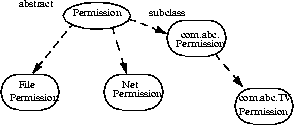

| CONTENTS | PREV | NEXT | Java Security Architecture |
The permission classes represent access to system resources. The java.security.Permission class is an abstract class and is subclassed, as appropriate, to represent specific accesses.As an example of a permission, the following code can be used to produce a permission to read the file named "abc" in the /tmp directory:
perm = new java.io.FilePermission("/tmp/abc", "read");
New permissions are subclassed either from the Permission class or one of its subclasses, such as java.security.BasicPermission. Subclassed permissions (other than BasicPermission) generally belong to their own packages. Thus, FilePermission is found in the java.io package.A crucial abstract method that needs to be implemented for each new class of permission is the
impliesmethod. Basically, "a implies b" means that if one is granted permission "a", one is naturally granted permission "b". This is important when making access control decisions.Associated with the abstract class java.security.Permission are the abstract class named java.security.PermissionCollection and the final class java.security.Permissions.
Class java.security.PermissionCollection represents a collection (i.e., a set that allows duplicates) of Permission objects for a single category (such as file permissions), for ease of grouping. In cases where permissions can be added to the PermissionCollection object in any order, such as for file permissions, it is crucial that the PermissionCollection object ensure that the correct semantics are followed when the
impliesfunction is called.Class java.security.Permissions represents a collection of collections of Permission objects, or in other words, a super collection of heterogeneous permissions.
Applications are free to add new categories of permissions that the system supports. How to add such application-specific permissions is discussed later in this document.
Now we describe the syntax and semantics of all built-in permissions.
This abstract class is the ancestor of all permissions. It defines the essential functionalities required for all permissions.Each permission instance is typically generated by passing one or more string parameters to the constructor. In a common case with two parameters, the first parameter is usually "the name of the target" (such as the name of a file for which the permission is aimed), and the second parameter is the action (such as "read" action on a file). Generally, a set of actions can be specified together as a comma-separated composite string.
This class holds a homogeneous collection of permissions. In other words, each instance of the class holds only permissions of the same type.
This class is designed to hold a heterogeneous collection of permissions. Basically, it is a collection of java.security.PermissionCollection objects.
Recall that the internal state of a security policy is normally expressed by the permission objects that are associated with each code source. Given the dynamic nature of Java technology, however, it is possible that when the policy is initialized the actual code that implements a particular permission class has not yet been loaded and defined in the Java application environment. For example, a referenced permission class may be in a JAR file that will later be loaded.The UnresolvedPermission class is used to hold such "unresolved" permissions. Similarly, the class java.security.UnresolvedPermissionCollection stores a collection of UnresolvedPermission permissions.
During access control checking on a permission of a type that was previously unresolved, but whose class has since been loaded, the unresolved permission is "resolved" and the appropriate access control decision is made. That is, a new object of the appropriate class type is instantiated, if possible, based on the information in the UnresolvedPermission. This new object replaces the UnresolvedPermission, which is removed.
If the permission is still unresolvable at this time, the permission is considered invalid, as if it is never granted in a security policy.
The targets for this class can be specified in the following ways, where directory and file names are strings that cannot contain white spaces.
file directory (same as directory/) directory/file directory/* (all files in this directory) * (all files in the current directory) directory/- (all files in the file system under this directory) - (all files in the file system under the current directory) "<<ALL FILES>>" (all files in the file system)
Note that "<<ALL FILES>>" is a special string denoting all files in the system. On a Unix system, this includes all files under the root directory. On an MS-DOS system, this includes all files on all drives.The actions are: read, write, delete, and execute. Therefore, the following are valid code samples for creating file permissions:
import java.io.FilePermission;
FilePermission p = new FilePermission("myfile", "read,write");
FilePermission p = new FilePermission("/home/gong/", "read");
FilePermission p = new FilePermission("/tmp/mytmp", "read,delete");
FilePermission p = new FilePermission("/bin/*", "execute");
FilePermission p = new FilePermission("*", "read");
FilePermission p = new FilePermission("/-", "read,execute");
FilePermission p = new FilePermission("-", "read,execute");
FilePermission p = new FilePermission("<<ALL FILES>>", "read");
Theimpliesmethod in this class correctly interprets the file system. For example, FilePermission("/-", "read,execute") implies FilePermission("/home/gong/public_html/index.html", "read"), and FilePermission("bin/*", "execute") implies FilePermission("bin/emacs19.31", "execute").Note: Most of these strings are given in platform-dependent format. For example, to represent read access to the file named "foo" in the "temp" directory on the C drive of a Windows system, you would use
FilePermission p = new FilePermission("c:\\temp\\foo", "read");
The double backslashes are necessary to represent a single backslash because the strings are processed by a tokenizer (java.io.StreamTokenizer), which allows "\" to be used as an escape string (e.g., "\n" to indicate a new line) and which thus requires two backslashes to indicate a single backslash. After the tokenizer has processed the above FilePermission target string, converting double backslashes to single backslashes, the end result is the actual path
"c:\temp\foo"
It is necessary that the strings be given in platform-dependent format until there is a universal file description language. Note also that the use of meta symbols such as "*" and "-" prevents the use of specific file names. We think this is a small limitation that can be tolerated for the moment. Finally, note that "/-" and "<<ALL FILES>>" are the same target on Unix systems in that they both refer to the entire file system. (They can refer to multiple file systems if they are all available). The two targets are potentially different on other operating systems, such as MS Windows and MacOS.Also note that a target name that specifies just a directory, with a "read" action, as in
FilePermission p = new FilePermission("/home/gong/", "read");
means you are only giving permission to list the files in that directory, not read any of them. To allow read access to files, you must specify either an explicit file name, or an "*" or "-", as in
FilePermission p = new FilePermission("/home/gong/myfile", "read");
FilePermission p = new FilePermission("/home/gong/*", "read");
FilePermission p = new FilePermission("/home/gong/-", "read");
And finally, note that code always automatically has permission to read files from its same (URL) location, and subdirectories of that location; it does not need explicit permission to do so.
This class represents access to a network via sockets. The target for this class can be given as "hostname:port_range", where hostname can be given in the following ways:
hostname (a single host) IP address (a single host) localhost (the local machine) "" (equivalent to "localhost") hostname.domain (a single host within the domain) hostname.subdomain.domain *.domain (all hosts in the domain) *.subdomain.domain * (all hosts)
That is, the host is expressed as a DNS name, as a numerical IP address, as "localhost" (for the local machine) or as "" (which is equivalent to specifying "localhost").The wildcard "*" may be included once in a DNS name host specification. If it is included, it must be in the leftmost position, as in "*.sun.com".
The port_range can be given as follows:
N (a single port) N- (all ports numbered N and above) -N (all ports numbered N and below) N1-N2 (all ports between N1 and N2, inclusive)
Here N, N1, and N2 are non-negative integers ranging from 0 to 65535 (2^16-1).The actions on sockets are accept, connect, listen, and resolve (which is basically DNS lookup). Note that implicitly, the action "resolve" is implied by "accept", "connect", and "listen" -- i.e., those who can listen or accept incoming connections from or initiate out-going connections to a host should be able to look up the name of the remote host.
Below are some examples of socket permissions.
import java.net.SocketPermission;
SocketPermission p = new SocketPermission("java.sun.com","accept");
p = new SocketPermission("204.160.241.99","accept");
p = new SocketPermission("*.com","connect");
p = new SocketPermission("*.sun.com:80","accept");
p = new SocketPermission("*.sun.com:-1023","accept");
p = new SocketPermission("*.sun.com:1024-","connect");
p = new SocketPermission("java.sun.com:8000-9000",
"connect,accept");
p = new SocketPermission("localhost:1024-",
"accept,connect,listen");
Note that SocketPermission("java.sun.com:80,8080","accept") and SocketPermission("java.sun.com,javasun.sun.com","accept") are not valid socket permissions.Moreover, because listen is an action that applies only to ports on the local host, whereas accept is an action that applies to ports on both the local and remote host, both actions are necessary.
The BasicPermission class extends the Permission class. It can be used as the base class for permissions that want to follow the same naming convention as BasicPermission (see below).The name for a BasicPermission is the name of the given permission (for example, "exitVM", "setFactory", "queuePrintJob", etc). The naming convention follows the hierarchical property naming convention. An asterisk may appear at the end of the name, following a ".", or by itself, to signify a wildcard match. For example: "java.*" or "*" is valid, "*java" or "a*b" is not valid.
The action string (inherited from Permission) is unused.Thus, BasicPermission is commonly used as the base class for "named" permissions (ones that contain a name but no actions list; you either have the named permission or you don't.) Subclasses may implement actions on top of BasicPermission, if desired.
Some of the BasicPermission subclasses are java.lang.RuntimePermission, java.security.SecurityPermission, java.util.PropertyPermission, and java.net.NetPermission.
The targets for this class are basically the names of Java properties as set in various property files. Examples are the "java.home" and "os.name" properties. Targets can be specified as "*" (any property), "a.*" (any property whose name has a prefix "a."), "a.b.*", and so on. Note that the wildcard can occur only once and can only be at the rightmost position.This is one of the BasicPermission subclasses that implements actions on top of BasicPermission. The actions are read and write. Their meaning is defined as follows: "read" permission allows the
getPropertymethod in java.lang.System to be called to get the property value, and "write" permission allows thesetPropertymethod to be called to set the property value.
The target for a RuntimePermission can be represented by any string, and there is no action associated with the targets. For example, RuntimePermission("exitVM") denotes the permission to exit the Java Virtual Machine.
createClassLoader
getClassLoader
setContextClassLoader
setSecurityManager
createSecurityManager
exitVM
setFactory
setIO
modifyThread
stopThread
modifyThreadGroup
getProtectionDomain
readFileDescriptor
writeFileDescriptor
loadLibrary.{library name}
accessClassInPackage.{package name}
defineClassInPackage.{package name}
accessDeclaredMembers.{class name}
queuePrintJob
This is in the same spirit as the RuntimePermission; it's a permission without actions. The targets for this class are:
accessClipboard accessEventQueue listenToAllAWTEvents showWindowWithoutWarningBanner
This class contains the following targets and no actions:
requestPasswordAuthentication setDefaultAuthenticator specifyStreamHandler
This is the Permission class for reflective operations. A ReflectPermission is a named permission (like RuntimePermission) and has no actions. The only name currently defined is
suppressAccessChecks
which allows suppressing the standard Java programming language access checks -- for public, default (package) access, protected, and private members -- performed by reflected objects at their point of use.
This class contains the following targets and no actions:
enableSubclassImplementation enableSubstitution
SecurityPermissions control access to security-related objects, such as Security, Policy, Provider, Signer, and Identity objects. This class contains the following targets and no actions:
getPolicy
setPolicy
getProperty.{key}
setProperty.{key}
insertProvider.{provider name}
removeProvider.{provider name}
setSystemScope
setIdentityPublicKey
setIdentityInfo
printIdentity
addIdentityCertificate
removeIdentityCertificate
clearProviderProperties.{provider name}
putProviderProperty.{provider name}
removeProviderProperty.{provider name}
getSignerPrivateKey
setSignerKeyPair
This permission implies all permissions. It is introduced to simplify the work of system administrators who might need to perform multiple tasks that require all (or numerous) permissions. It would be inconvenient to require the security policy to iterate through all permissions. Note that AllPermission also implies new permissions that are defined in the future.Clearly much caution is necessary when considering granting this permission.
AuthPermission handles authentication permissions and authentication-related object such as Subject, SubjectDomainCombiner, LoginContext, and Configuration. This class contains the following targets and no actions:
doAs doAsPrivileged getSubject getSubjectFromDomainCombiner setReadOnly modifyPrincipals modifyPublicCredentials modifyPrivateCredentials refreshCredential destroyCredential createLoginContext.{name} getLoginConfiguration setLoginConfiguration refreshLoginConfiguration
Recall that permissions are often compared against each other, and to facilitate such comparisons, we require that each permission class defines animpliesmethod that represents how the particular permission class relates to other permission classes. For example, java.io.FilePermission("/tmp/*", "read") implies java.io.FilePermission("/tmp/a.txt", "read") but does not imply any java.net.NetPermission.There is another layer of implication that may not be immediately obvious to some readers. Suppose that one applet has been granted the permission to write to the entire file system. This presumbly allows the applet to replace the system binary, including the JVM runtime environment. This effectively means that the applet has been granted all permissions.
Another example is that if an applet is granted the runtime permission to create class loaders, it is effectively granted many more permissions, as a class loader can perform sensitive operations.
Other permissions that are "dangerous" to give out include those that allow the setting of system properties, runtime permissions for defining packages and for loading native code libraries (because the Java security architecture is not designed to and does not prevent malicious behavior at the level of native code), and of course the AllPermission.
For more information about permissions, including tables enumerating the risks of assigning specific permissions as well as a table of all the Java 2 SDK built-in methods that require permissions, see
http://java.sun.com/j2se/sdk/1.2/docs/guide/security/permissions.html.
It is essential that no one except Sun Microsystems should extend the permissions that are built into the Java 2 SDK, either by adding new functionality or by introducing additional target keywords into a class such as java.lang.RuntimePermission. This maintains consistency.To create a new permission, the following steps are recommended, as shown by an example. Suppose an application developer from company ABC wants to create a customized permission to "watch TV".
First, create a new class com.abc.Permission that extends the abstract class java.security.Permission (or one of its subclasses), and another new class com.abc.TVPermission that extends the com.abc.Permission. Make sure that the
impliesmethod, among others, is correctly implemented. (Of course, com.abc.TVPermission can directly extend java.security.Permission; the intermediate com.abc.Permission is not required.)
public class com.abc.Permission extends java.security.Permission public class com.abc.TVPermission extends com.abc.Permission
The following figure shows the subclass relationship. Second, include these new classes with the application package.
Each user that wants to allow this new type of permission for specific code does so by adding an entry in a policy file. (Details of the policy file syntax are given in a later section.) An example of a policy file entry granting code from http://java.sun.com/ permission to watch channel 5 would be:
grant codeBase "http://java.sun.com/" {
permission com.abc.TVPermission "channel-5", "watch";
}
In the application's resource management code, when checking to see if a permission should be granted, call AccessController'scheckPermissionmethod using a com.abc.TVPermission object as the parameter.
com.abc.TVPermission tvperm = new
com.abc.TVPermission("channel-5", "watch");
AccessController.checkPermission(tvperm);
Note that, when adding a new permission, one should create a new (permission) class and not add a new method to the security manager. (In the past, in order to enable checking of a new type of access, you had to add a new method to the SecurityManager class.)If more elaborate TVPermissions such as "channel-1:13" or "channel-*" are allowed, then it may be necessary to implement a TVPermissionCollection object that knows how to deal with the semantics of these pseudo names.
New code should always invoke a permission check by calling the
checkPermissionmethod of the AccessController class in order to exercise the built-in access control algorithm. There is no essential need to examine whether there is a ClassLoader or a SecurityManager. On the other hand, if the algorithm should be left to the installed security manager class, then the methodSecurityManager.checkPermissionshould be invoked instead.
This class extends the concept of a codebase within HTML to encapsulate not only the code location (URL) but also the certificate(s) containing public keys that should be used to verify signed code originating from that location. Note that this is not the equivalent of the CodeBase tag in HTML files. Each certificate is represented as a java.security.cert.Certificate, and each URL as a java.net.URL.
The system security policy for a Java application environment, specifying which permissions are available for code from various sources, is represented by a Policy object. More specifically, it is represented by a Policy subclass providing an implementation of the abstract methods in the Policy class.In order for an applet (or an application running under a SecurityManager) to be allowed to perform secured actions, such as reading or writing a file, the applet (or application) must be granted permission for that particular action. The only exception is that code always automatically has permission to read files from its same CodeSource, and subdirectories of that CodeSource; it does not need explicit permission to do so.
There could be multiple instances of the Policy object, although only one is "in effect" at any time. The currently-installed Policy object can be obtained by calling the
getPolicymethod, and it can be changed by a call to thesetPolicymethod (by code with permission to reset the Policy).The source location for the policy information utilized by the Policy object is up to the Policy implementation. The policy configuration may be stored, for example, as a flat ASCII file, as a serialized binary file of the Policy class, or as a database. There is a Policy reference implementation that obtains its information from static policy configuration files.
In the Policy reference implementation, the policy can be specified within one or more policy configuration files. The configuration files indicate what permissions are allowed for code from specified code sources. Each configuration file must be encoded in UTF-8.A policy configuration file essentially contains a list of entries. It may contain a "keystore" entry, and contains zero or more "grant" entries.
A keystore is a database of private keys and their associated digital certificates such as X.509 certificate chains authenticating the corresponding public keys. The keytool utility is used to create and administer keystores. The keystore specified in a policy configuration file is used to look up the public keys of the signers specified in the grant entries of the file. A keystore entry must appear in a policy configuration file if any grant entries specify signer aliases, or if any grant entries specify a principal alias (see below).
At this time, there can be only one keystore entry in the policy file (others after the first one are ignored), and it can appear anywhere outside the file's grant entries . It has the following syntax:
keystore "some_keystore_url", "keystore_type";
Here, "some_keystore_url" specifies the URL location of the keystore, and "keystore_type" specifies the keystore type. The latter is optional. If not specified, the type is assumed to be that specified by the "keystore.type" property in the security properties file.The URL is relative to the policy file location. Thus if the policy file is specified in the security properties file as:
policy.url.1=http://foo.bar.com/blah/some.policy
and that policy file has an entry:
keystore ".keystore";
then the keystore will be loaded from:
http://foo.bar.com/blah/.keystore
The URL can also be absolute.A keystore type defines the storage and data format of the keystore information, and the algorithms used to protect private keys in the keystore and the integrity of the keystore itself. The default type supported by Sun Microsystems is a proprietary keystore type named "JKS".
Each grant entry in a policy file essentially consists of a CodeSource and its permissions. Actually, a CodeSource consists of a URL and a set of certificates, while a policy file entry includes a URL and a list of signer names. The system creates the corresponding CodeSource after consulting the keystore to determine the certificate(s) of the specified signers.
Each grant entry in the policy file is of the following format, where the leading "grant" is a reserved word that signifies the beginning of a new entry and optional items appear in brackets. Within each entry, a leading "permission" is another reserved word that marks the beginning of a new permission in the entry. Each grant entry grants a set of permissions to a specified code source and principals.
grant [SignedBy "signer_names"] [, CodeBase "URL"]
[, Principal [principal_class_name] "principal_name"]
[, Principal [principal_class_name] "principal_name"] ... {
permission permission_class_name [ "target_name" ]
[, "action"] [, SignedBy "signer_names"];
permission ...
};
White spaces are allowed immediately before or after any comma. The name of the permission class must be a fully qualified class name, such as java.io.FilePermission, and cannot be abbreviated (for example, to FilePermission).Note that the action field is optional in that it can be omitted if the permission class does not require it. If it is present, then it must come immediately after the target field.
The exact meaning of a CodeBase URL value depends on the characters at the end. A CodeBase with a trailing "/" matches all class files (not JAR files) in the specified directory. A CodeBase with a trailing "/*" matches all files (both class and JAR files) contained in that directory. A CodeBase with a trailing "/-" matches all files (both class and JAR files) in the directory and recursively all files in subdirectories contained in that directory.
The CodeBase field (URL) is optional in that, if it is omitted, it signifies "any code base".
The first signer name field is a string alias that is mapped, via a separate mechanism, to a set of public keys (within certificates in the keystore) that are associated with the signers. These keys are used to verify that certain signed classes are really signed by these signers.
This signer field can be a comma-separated string containing names of multiple signers, an example of which is "Adam,Eve,Charles", which means signed by Adam and Eve and Charles (i.e., the relationship is AND, not OR).
This field is optional in that, if it is omitted, it signifies "any signer", or in other words, "It doesn't matter whether the code is signed or not".
The second signer field, inside a Permission entry, represents the alias to the keystore entry containing the public key corresponding to the private key used to sign the bytecodes that implemented the said permission class. This permission entry is effective (i.e., access control permission will be granted based on this entry) only if the bytecode implementation is verified to be correctly signed by the said alias.
A principal value specifies a class_name/principal_name pair which must be present within the executing threads principal set. The principal set is associated with the executing code by way of a Subject. The principal field is optional in that, if it is omitted, it signifies "any principals".
Note on KeyStore Alias Replacement:
If the principal class_name/principal_name pair is specified as a single quoted string, it is treated as a keystore alias. The keystore is consulted and queried (via the alias) for an X509 Certificate. If one is found, the principal_class is automatically treated as
javax.security.auth.x500.X500Principal, and the principal_name is automatically treated as the subject distinguished name from the certificate. If an X509 Certificate mapping is not found, the entire grant entry is ignored.The order between the CodeBase, SignedBy, and Principal fields does not matter.
An informal BNF grammer for the Policy file format is given below, where non-capitalized terms are terminals:
PolicyFile -> PolicyEntry | PolicyEntry; PolicyFile
PolicyEntry -> grant {PermissionEntry}; |
grant SignerEntry {PermissionEntry} |
grant CodebaseEntry {PermissionEntry} |
grant PrincipalEntry {PermissionEntry} |
grant SignerEntry, CodebaseEntry {PermissionEntry} |
grant CodebaseEntry, SignerEntry {PermissionEntry} |
grant SignerEntry, PrincipalEntry {PermissionEntry} |
grant PrincipalEntry, SignerEntry {PermissionEntry} |
grant CodebaseEntry, PrincipalEntry {PermissionEntry} |
grant PrincipalEntry, CodebaseEntry {PermissionEntry} |
grant SignerEntry, CodebaseEntry, PrincipalEntry {PermissionEntry} |
grant CodebaseEntry, SignerEntry, PrincipalEntry {PermissionEntry} |
grant SignerEntry, PrincipalEntry, CodebaseEntry {PermissionEntry} |
grant CodebaseEntry, PrincipalEntry, SignerEntry {PermissionEntry} |
grant PrincipalEntry, CodebaseEntry, SignerEntry {PermissionEntry} |
grant PrincipalEntry, SignerEntry, CodebaseEntry {PermissionEntry} |
keystore "url"
SignerEntry -> signedby (a comma-separated list of strings)
CodebaseEntry -> codebase (a string representation of a URL)
PrincipalEntry -> OnePrincipal | OnePrincipal, PrincipalEntry
OnePrincipal -> principal [ principal_class_name ] "principal_name" (a principal)
PermissionEntry -> OnePermission | OnePermission PermissionEntry
OnePermission -> permission permission_class_name
[ "target_name" ] [, "action_list"]
[, SignerEntry];
Now we give some examples. The following policy grants permission a.b.Foo to code signed by Roland:
grant signedBy "Roland" {
permission a.b.Foo;
};
The following grants a FilePermission to all code (regardless of the signer and/or codeBase):
grant {
permission java.io.FilePermission ".tmp", "read";
};
The following grants two permissions to code that is signed by both Li and Roland:
grant signedBy "Roland,Li" {
permission java.io.FilePermission "/tmp/*", "read";
permission java.util.PropertyPermission "user.*";
};
The following grants two permissions to code that is signed by Li and that comes from http://java.sun.com:
grant codeBase "http://java.sun.com/*", signedBy "Li" {
permission java.io.FilePermission "/tmp/*", "read";
permission java.io.SocketPermission "*", "connect";
};
The following grants two permissions to code that is signed by both Li and Roland, and only if the bytecodes implementing com.abc.TVPermission are genuinely signed by Li.
grant signedBy "Roland,Li" {
permission java.io.FilePermission "/tmp/*", "read";
permission com.abc.TVPermission "channel-5", "watch",
signedBy "Li";
};
The reason for including the second signer field is to prevent spoofing when a permission class does not reside with the Java runtime installation. For example, a copy of the com.abc.TVPermission class can be downloaded as part of a remote JAR archive, and the user policy might include an entry that refers to it. Because the archive is not long-lived, the second time the com.abc.TVPermission class is downloaded, posssibly from a different web site, it is crucial that the second copy is authentic, as the presence of the permission entry in the user policy might reflect the user's confidence or belief in the first copy of the class bytecode.The reason we chose to use digital signatures to ensure authenticity, rather than storing (a hash value of) the first copy of the bytecodes and using it to compare with the second copy, is because the author of the permission class can legitimately update the class file to reflect a new design or implementation.
Please note: The strings for a file path must be specified in a platform-dependent format; this is necessary until there is a universal file description language. The above examples have shown strings appropriate on Solaris systems. On Windows systems, when you directly specify a file path in a string, you need to include two backslashes for each actual single backslash in the path, as in
grant signedBy "Roland" {
permission java.io.FilePermission "C:\\users\\Cathy\\*", "read";
};
This is because the strings are processed by a tokenizer (java.io.StreamTokenizer), which allows "\" to be used as an escape string (e.g., "\n" to indicate a new line) and which thus requires two backslashes to indicate a single backslash. After the tokenizer has processed the above FilePermission target string, converting double backslashes to single backslashes, the end result is the actual path
"C:\users\Cathy\*"
Finally, here are some principal-based grant entries:
grant principal javax.security.auth.x500.X500Principal "cn=Alice" { permission java.io.FilePermission "/home/Alice", "read, write"; };This permits any code executing as the X500Principal, "cn=Alice", permission to read and write to "/home/Alice".The following example shows a grant statement with both codesource and principal information.
grant codebase "http://www.games.com", signedBy "Duke", principal javax.security.auth.x500.X500Principal "cn=Alice" { permission java.io.FilePermission "/tmp/games", "read, write"; };This allows code downloaded from "www.games.com", signed by "Duke", and executed by "cn=Alice", permission to read and write into the "/tmp/games" directory.The following example shows a grant statement with KeyStore alias replacement:
keystore "http://foo.bar.com/blah/.keystore"; grant principal "alice" { permission java.io.FilePermission "/tmp/games", "read, write"; };"alice" will be replaced byjavax.security.auth.x500.X500Principal "cn=Alice"assuming the X.509 certificate associated with the keystore alias, alice, has a subject distinguished name of "cn=Alice". This allows code executed by the X500Principal "cn=Alice" permission to read and write into the "/tmp/games" directory.
Property expansion is possible in policy files and in the security properties file.Property expansion is similar to expanding variables in a shell. That is, when a string like
appears in a policy file, or in the security properties file, it will be expanded to the value of the specified system property. For example,
permission java.io.FilePermission "${user.home}", "read";
will expand "${user.home}" to use the value of the "user.home" system property. If that property's value is "/home/cathy", then the above is equivalent to
permission java.io.FilePermission "/home/cathy", "read";
In order to assist in platform-independent policy files, you can also use the special notation of "${/}", which is a shortcut for "${file.separator}". This allows permission designations such as
permission java.io.FilePermission "${user.home}${/}*", "read";
If user.home is /home/cathy, and you are on Solaris, the above gets converted to:
permission java.io.FilePermission "/home/cathy/*", "read";
If on the other hand user.home is C:\users\cathy and you are on a Windows system, the above gets converted to:
permission java.io.FilePermission "C:\users\cathy\*", "read";
Also, as a special case, if you expand a property in a codebase, such as
grant codeBase "file:/${java.home}/lib/ext/"
then any file.separator characters will be automatically converted to /'s, which is desirable since codebases are URLs. Thus on a Windows system, even if java.home is set to C:\j2sdk1.2, the above would get converted to
grant codeBase "file:/C:/j2sdk1.2/lib/ext/"
Thus you don't need to use ${/} in codebase strings (and you shouldn't).Property expansion takes place anywhere a double quoted string is allowed in the policy file. This includes the signedby, codebase, target names, and actions fields.
Whether or not property expansion is allowed is controlled by the value of the "policy.expandProperties" property in the security properties file. If the value of this property is true (the default), expansion is allowed.
Please note: You can't use nested properties; they will not work. For example,
"${user.${foo}}"
doesn't work, even if the "foo" property is set to "home". The reason is the property parser doesn't recognize nested properties; it simply looks for the first "${", and then keeps looking until it finds the first "}" and tries to interpret the result "${user.$foo}" as a property, but fails if there is no such property.Also note: If a property can't be expanded in a grant entry, permission entry, or keystore entry, that entry is ignored. For example, if the system property "foo" is not defined and you have:
grant codeBase "${foo}" {
permission ...;
permission ...;
};
then all the permissions in this grant entry are ignored. If you have
grant {
permission Foo "${foo}";
permission Bar;
};
then only the "permission Foo..." entry is ignored. And finally, if you have
keystore "${foo}";
then the keystore entry is ignored.One final note: On Windows systems, when you directly specify a file path in a string, you need to include two backslashes for each actual single backslash in the path, as in
"C:\\users\\cathy\\foo.bat"
This is because the strings are processed by a tokenizer (java.io.StreamTokenizer), which allows "\" to be used as an escape string (e.g., "\n" to indicate a new line) and which thus requires two backslashes to indicate a single backslash. After the tokenizer has processed the above string, converting double backslashes to single backslashes, the end result is
"C:\users\cathy\foo.bat"
Expansion of a property in a string takes place after the tokenizer has processed the string. Thus if you have the string
"${user.home}\\foo.bat"
then first the tokenizer processes the string, converting the double backslashes to a single backslash, and the result is
"${user.home}\foo.bat"
Then the ${user.home} property is expanded and the end result is
"C:\users\cathy\foo.bat"
assuming the user.home value is "C:\users\cathy". Of course, for platform independence, it would be better if the string was initially specified without any explicit slashes, i.e., using the ${/} property instead, as in
"${user.home}${/}foo.bat"
Generalized forms of expansion are also supported in policy files. For example, permission names may contain a string of the form:${{protocol:protocol_data}}If such a string occurs in a permission name, then the value in protocol determines the exact type of expansion that should occur, and protocol_data is used to help perform the expansion. protocol_data may be empty, in which case the above string should simply take the form:${{protocol}}There are two protocols supported in the default policy file implementation:
- ${{self}}
The protocol, self, denotes a replacement of the entire string, ${{self}}, with one or more principal class/name pairs. The exact replacement performed depends upon the contents of the grant clause to which the permission belongs.
If the grant clause does not contain any principal information, the permission will be ignored (permissions containing ${{self}} in their target names are only valid in the context of a principal-based grant clause). For example, BarPermission will always be ignored in the following grant clause:
grant codebase "www.foo.com", signedby "duke" { permission BarPermission "... ${{self}} ..."; };If the grant clause contains principal information, ${{self}} will be replaced with that same principal information. For example, ${{self}} in BarPermission will be replaced by javax.security.auth.x500.X500Principal "cn=Duke" in the following grant clause:grant principal javax.security.auth.x500.X500Principal "cn=Duke" { permission BarPermission "... ${{self}} ..."; };If there is a comma-separated list of principals in the grant clause, then ${{self}} will be replaced by the same comma-separated list or principals. In the case where both the principal class and name are wildcarded in the grant clause, ${{self}} is replaced with all the principals associated with theSubjectin the currentAccessControlContext.The following example describes a scenario involving both self and KeyStore alias replacement together:
keystore "http://foo.bar.com/blah/.keystore"; grant principal "duke" { permission BarPermission "... ${{self}} ..."; };In the above example, "duke" will first be expanded intojavax.security.auth.x500.X500Principal "cn=Duke"assuming the X.509 certificate associated with the KeyStore alias, "duke", has a subject distinguished name of "cn=Duke". Next, ${{self}} will be replaced with the same principal information that just got expanded in the grant clause:javax.security.auth.x500.X500Principal "cn=Duke".- ${{alias:alias_name}}
The protocol, alias, denotes a java.security.KeyStore alias substitution. The
KeyStoreused is the one specified in the KeyStore entry. alias_name represents an alias into theKeyStore. ${{alias:alias_name}} is replaced with javax.security.auth.x500.X500Principal "DN", where DN represents the subject distinguished name of the certificate belonging to alias_name. For example:keystore "http://foo.bar.com/blah/.keystore"; grant codebase "www.foo.com" { permission BarPermission "... ${{alias:duke}} ..."; };In the above example the X.509 certificate associated with the alias, duke, is retrieved from theKeyStore, foo.bar.com/blah/.keystore. Assuming duke's certificate specifies "o=dukeOrg, cn=duke" as the subject distinguished name, then ${{alias:duke}} is replaced with javax.security.auth.x500.X500Principal "o=dukeOrg, cn=duke".The permission entry is ignored under the following error conditions:
- The keystore entry is unspecified
- The alias_name is not provided
- The certificate for alias_name can not be retrieved
- The certificate retrieved is not an X.509 certificate
When a principal executes a class that originated from a particular CodeSource, the security mechanism consults the policy object to determine what permissions to grant. This is done by invoking thegetPermissionsorimpliesmethod on the Policy object that is installed in the VM.Clearly, a given code source in a ProtectionDomain can match the code source given in multiple entries in the policy, for example because the wildcard "*" is allowed.
The following algorithm is used to locate the appropriate set of permissions in the policy.
1. match the public keys, if code is signed.
2. if a key is not recognized in the policy, ignore the key
if every key is ignored, treat the code as unsigned.
3. if the keys are matched, or no signer was specified {
try to match all URLs in the policy for the keys
}
4. if the keys are matched (or no signer was specified),
and the URLs are matched (or no codebase was specified) {
try to match all principals in the policy with
the principals associated with the current executing thread.
5. if either key, URL, or principals are not matched, use built-in default
permission, which is the original sandbox permission.
The exact meaning of a policy entry codeBase URL value depends on the characters at the end. A codeBase with a trailing "/" matches all class files (not JAR files) in the specified directory. A codeBase with a trailing "/*" matches all files (both class and JAR files) contained in that directory. A codeBase with a trailing "/-" matches all files (both class and JAR files) in the directory and recursively all files in subdirectories contained in that directory.As an example, given "http://java.sun.com/-" in the policy, then any code base that is on this web site matches the policy entry. Matching code bases include "http://java.sun.com/j2se/sdk/" and "http://java.sun.com/people/gong/appl.jar".
If multiple entries are matched, then all the permissions given in those entries are granted. In other words, permission assignment is additive. For example, if code signed with key A gets permission X and code signed by key B gets permission Y and no particular codebase is specified, then code signed by both A and B gets permissions X and Y. Similarly, if code with codeBase "http://java.sun.com/-" is given permission X, and "http://java.sun.com/people/*" is given permission Y, and no particular signers are specified, then an applet from "http://java.sun.com/people/applet.jar" gets both X and Y.
Note that URL matching here is purely syntactic. For example, a policy can give an entry that specifies a URL "ftp://ftp.sun.com". Such an entry is useful only when one can obtain Java code directly from ftp for execution.
To specify URLs for the local file system, a file URL can be used. For example, to specify files in the /home/cathy/temp directory in a Solaris system, you'd use
"file:/home/cathy/temp/*"
To specify files in the "temp" directory on the C drive in a Windows system, use
"file:/c:/temp/*"
Note: code base URLs always use slashes (no backlashes), regardless of the platform they apply to.You can also use an absolute path name such as
"/home/gong/bin/MyWonderfulJava"
In the Policy reference implementation, the policy can be specified within one or more policy configuration files. The configuration files specify what permissions are allowed for code from specified code sources.A policy file can be composed via a simple text editor, or via a graphical PolicyTool utility that is described later.
There is by default a single system-wide policy file, and a single user policy file.
The system policy file is by default located at
{java.home}/lib/security/java.policy (Solaris)
{java.home}\lib\security\java.policy (Windows)
Here, java.home is a system property specifying the directory into which the Java 2 SDK was installed.The user policy file is by default located at
{user.home}/.java.policy (Solaris)
{user.home}\.java.policy (Windows)
Here, user.home is a system property specifying the user's home directory.When the Policy is initialized, the system policy is loaded in first, and then the user policy is added to it. If neither policy is present, a built-in policy is used. This built-in policy is the same as the original sandbox policy.
Policy file locations are specified in the security properties file, which is located at
{java.home}/lib/security/java.security (Solaris)
{java.home}\lib/security\java.security (Windows)
The policy file locations are specified as the values of properties whose names are of the form
policy.url.n
Here, n is a number. You specify each such property value in a line of the following form:
policy.url.n=URL
Here, URL is a URL specification. For example, the default system and user policy files are defined in the security properties file as
policy.url.1=file:${java.home}/lib/security/java.policy
policy.url.2=file:${user.home}/.java.policy
You can actually specify a number of URLs, including ones of the form "http://", and all the designated policy files will get loaded. You can also comment out or change the second one to disable reading the default user policy file.The algorithm starts at policy.url.1, and keeps incrementing until it does not find a URL. Thus if you have policy.url.1 and policy.url.3, policy.url.3 will never be read.
It is also possible to specify an additional or a different policy file when invoking execution of an application. This can be done via the "-Djava.security.policy" command-line argument, which sets the value of the java.security.policy property. For example, if you use
java -Djava.security.manager -Djava.security.policy=pURL SomeApp
Here, pURL is a URL specifying the location of a policy file, then the specified policy file will be loaded in addition to all the policy files that are specified in the security properties file. (The "-Djava.security.manager" argument ensures that the default security manager is installed, and thus the application is subject to policy checks, as described in "Security Management for Applets and Applications". It is not required if the application SomeApp installs a security manager.)If you use the following, with a double equals, then just the specified policy file will be used; all others will be ignored.
java -Djava.security.manager -Djava.security.policy==pURL SomeApp
If you want to pass a policy file to the appletviewer, again use a "-Djava.security.policy" argument as follows:
appletviewer -J-Djava.security.policy=pURL myApplet
Please note: The "-Djava.security.policy" policy file value will be ignored (for both java and appletviewer commands) if the "policy.allowSystemProperty" property in the security properties file is set to false. The default is true.
The current design of the Policy class is not as comprehensive as it could be. We have given the issues much thought and are progressing cautiously, partly to ensure that we define method calls that are appropriate for the most common cases. For the meantime, an alternative policy class can be given to replace the default policy class, as long as the former is a subclass of the abstract Policy class and implements thegetPermissionsmethod (and other methods as necessary).The Policy reference implementation can be changed by resetting the value of the "policy.provider" security property (in the security properties file) to the fully qualified name of the desired Policy implementation class. The security properties file is located in the file named
{java.home}/lib/security/java.security (Solaris)
{java.home}\lib\security\java.security (Windows)
Here, {java.home} refers to the directory where the runtime environment is installed -- either the jre directory inside the Java 2 SDK, or the top-level directory of the Java 2 Runtime Environment.The property policy.provider specifies the name of the policy class, and the default is the following:
policy.provider=sun.security.provider.PolicyFile
To customize, you can change the property value to specify another class, as in
policy.provider=com.mycom.MyPolicy
Note that the MyPolicy class must be a subclass of java.security.Policy. It is perhaps worth emphasizing that such an override of the policy class is a temporary solution and a more comprehensive policy API will probably make this unnecessary.
This is a new exception class that is a subclass of java.lang.Exception. The intention is that there should be two types of exceptions associated with security and the security packages.
Such an exception is thrown only when some sort of security violation is detected. For example, such an exception is thrown when some code attempts to access a file, but it does not have permission for the access. Application developers may catch these exceptions, if they want.
Such an exception is security related but non-vital. For example, passing in an invalid key is probably not a security violation and should be caught and dealt with by a developer.There are currently still two exceptions within the java.security package that are subclasses from RuntimeException. We at this moment cannot change these due to backward compatibility requirements. We will revisit this issue in the future.